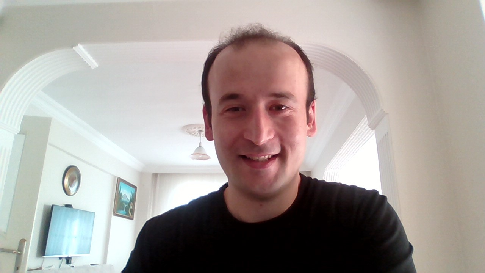

MURAT ÇAMURLU
Full Stack Developer
Ana Sayfa
Özgeçmişim
İletişim

Murat ÇAMURLU 1993 yılında Ordu'nun Korgan ilçesinde doğdu.
İlk ve orta öğrenim hayatını Korgan ilçesinde tamamladı.Lise eğitimini Öğretmen lisesinde aldı.
Sonrki eğitim hayatı çok çeşitli yerlerde devam etti.